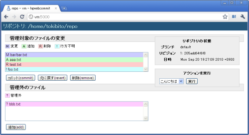

hgwebcommitはWebブラウザからmercurialリポジトリの操作するためのソフトウェアです。
FTPやSCPなどでファイルをサーバにアップロードしてコミットする際に、sshなどを使わなくてもブラウザ画面からコミットできます。
$ python myrepo.py * Running on http://0.0.0.0:5000/ * Restarting with reloader...
正常に動作していれば、リポジトリの状態が表示されます。
操作対象のリポジトリのフルパスを指定します。
コミットメッセージのエンコーディングを指定します。
コミット操作の可否を指定します。デフォルトでは True です。
サイドバーに表示するアクションを指定します。
設定ファイルの HGWEBCOMMIT_ACTIONS にアクションを設定することで、hgwebcommitに機能を追加することができます。
追加したアクションはサイドバーに表示され、コンボボックスで選択して実行できます。
アクションの記述はシンプルです。helloアクションの内容を以下に示します。
from flask import flash
from flaskext.babel import gettext, lazy_gettext
from hgwebcommit.actions.decorators import action
@action('hello', lazy_gettext('Hello'))
def hello():
flash(gettext('Hello!'))
このアクションを使うように設定ファイルを記述すると、コンボボックスには「こんにちは」と表示されます。
アクションを実行すると、フラッシュメッセージで「こんにちは！」と表示されます。
ノート
この例ではflask-babelを使用して国際化(i18n)を行っていますが、アクションを自作する場合、国際化が必ず必要というわけではありません。
ファイルシステム上のリポジトリへ変更を行うため、hgwebcommitのサーバを実行するユーザでコミット操作が行われます。